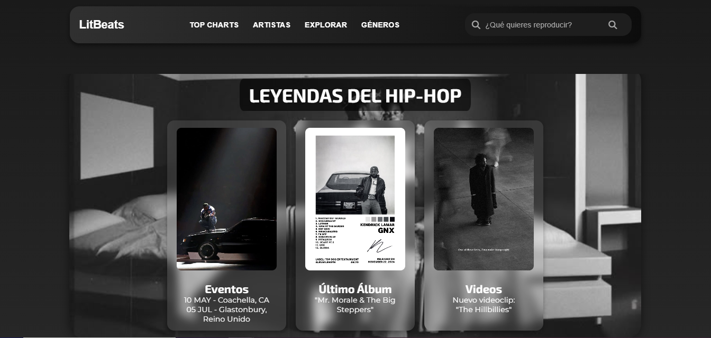
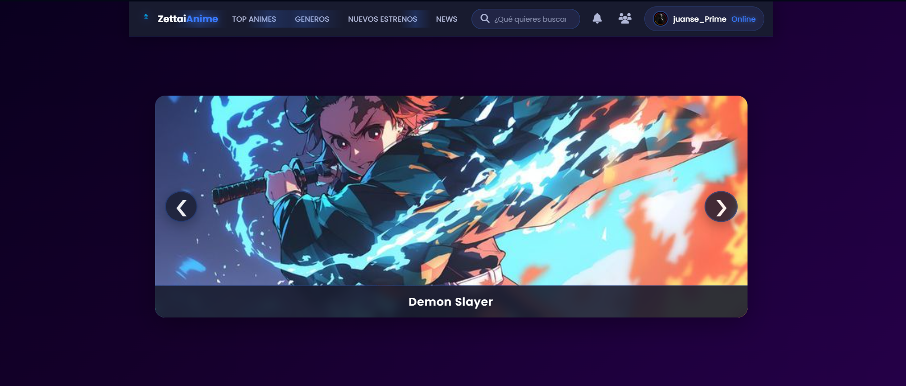

Contenido visual
Diseño de imágenes, composición y piezas gráficas listas para web.
Diseño web · Contenido · Liferay
Transformo ideas en experiencias digitales claras y humanas, uniendo diseño multimedia y código para interfaces que se sienten naturales y conectan de verdad.

Mi vida es una aventura creativa donde cada día es una oportunidad para superarme. Soy un apasionado del diseño, los videojuegos y la lectura, y encuentro en el ejercicio físico la energía para mantener mi mente y mi creatividad en movimiento.
Cada reto es una oportunidad para crecer y reinventarme. El diseño es mi forma de conectar ideas, emociones y experiencias en algo memorable.
Fuera de la pantalla, me sumerjo en mundos literarios, exploro universos digitales y disfruto cada logro, grande o pequeño. Mi objetivo es transformar cada proyecto en una experiencia única, donde la intención y la pasión sean protagonistas.
Manejo un abanico amplio de herramientas de diseño y desarrollo, pero hoy me enfoco en lo que más valor entrega a un proyecto: creación de contenido —imágenes, piezas visuales y copy— junto con la estructura de páginas web y su montaje en plataformas como Liferay.
Diseño de imágenes, composición y piezas gráficas listas para web.
Organización de textos, jerarquía y mensajes claros para el usuario.
Arquitectura de páginas, maquetación HTML/CSS y experiencia de navegación.
Implementación de sitios institucionales sobre CMS Liferay.
Sitios institucionales y muestras académicas de diseño web
Institucionales · Pontificia Universidad Javeriana

Rediseño y optimización del portal de servicios digitales externos. Mejoré la experiencia de usuario, reorganicé la información y creé una interfaz más clara para consultorías y servicios especializados.

Portal institucional de transparencia y acceso a información pública. Estructura clara, navegación intuitiva y búsqueda para facilitar el acceso a documentos y reportes de la universidad.

Sitio de apoyos financieros, becas y alternativas de financiación. Organicé la información por perfiles (aspirantes y estudiantes) para que cada persona encuentre rápido la opción que necesita.
Académicos · Muestras de diseño

Landing de marca de belleza y cuidado personal. Trabajé atmósfera visual, glassmorphism y una narrativa clara para presentar colección, historia de marca y exploración de productos.

Interfaz de plataforma musical enfocada en hip-hop. Diseñé navegación, cards de contenido (eventos, álbum y videos) y una estética oscura con glassmorphism para una experiencia inmersiva.

Concepto de plataforma de anime con carrusel destacado, navegación por géneros y búsqueda. Enfocado en atmósfera visual, tipografía y presentación de contenidos multimedia.
Mi trayectoria más reciente y las habilidades que he desarrollado en ella.
Entiendo necesidades, objetivos y audiencia para definir la estrategia correcta.
Creo wireframes y prototipos que reflejan la visión y los objetivos del proyecto.
Paso el diseño a código limpio, responsivo y pensado para el rendimiento.
Pruebo a fondo y entrego un producto pulido, listo para usar.
“Cada proyecto que creo nace de una intención clara: conectar visualmente con quien lo ve. No solo busco que algo se vea bien, sino que tenga un porqué.”
Conéctate conmigo. Me encantaría saber de ti.